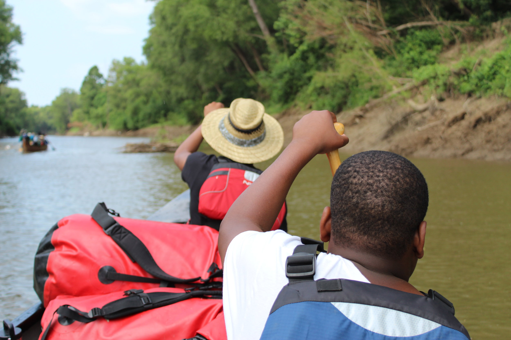
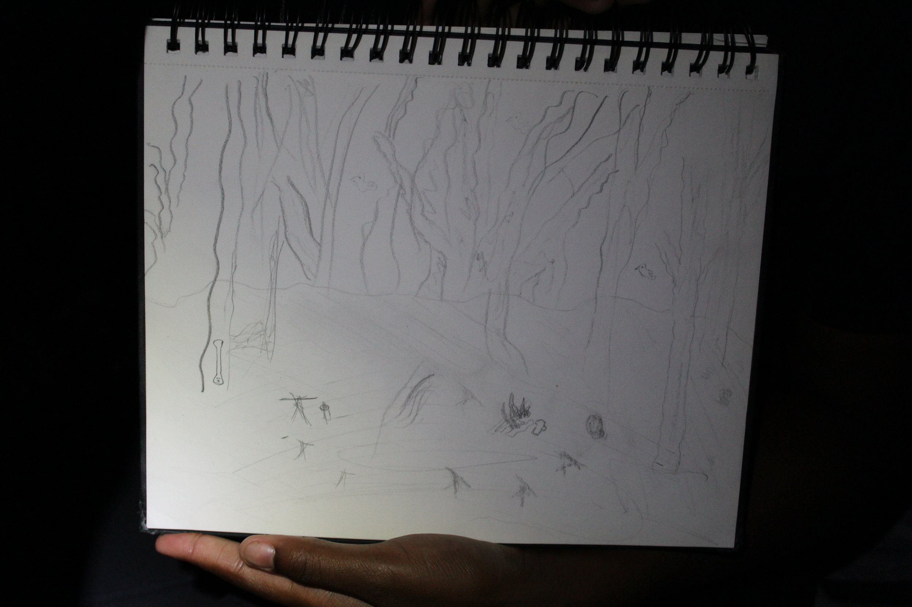
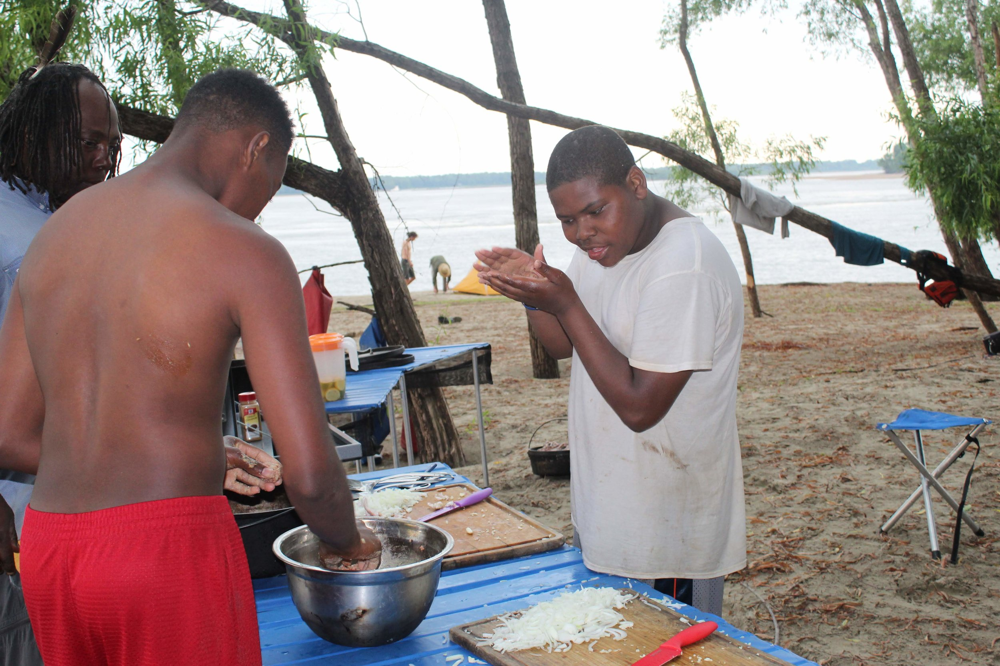
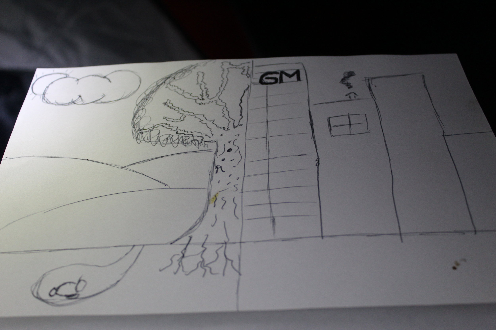
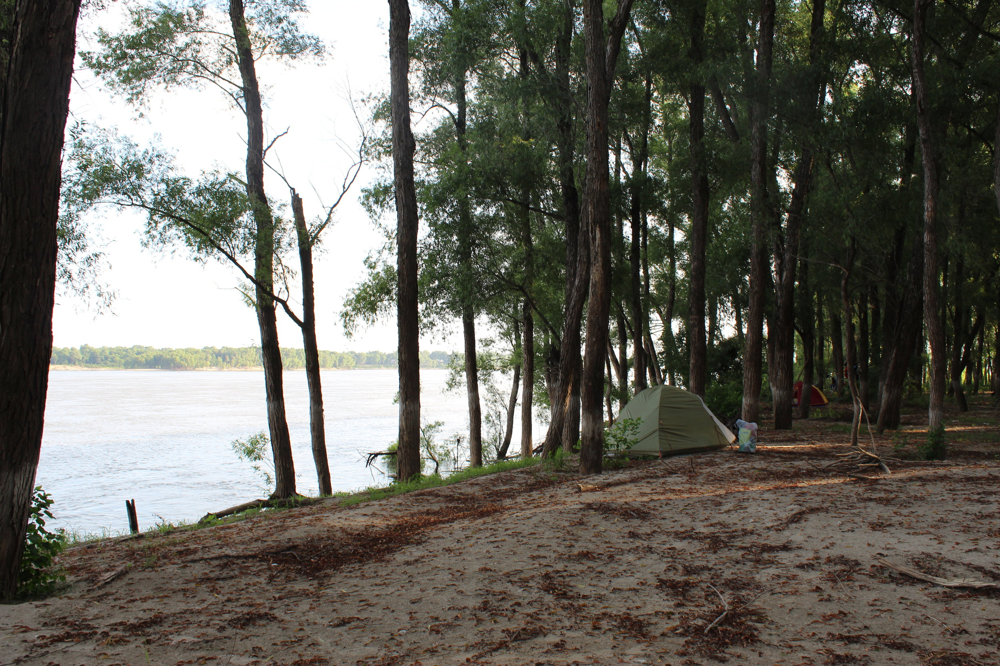

Day 2: 24 Miles — Montezuma to Island 64

Last night our intrepid crew set a goal to paddle 24 miles to reach a special campsite on Island 64. They had a choice to paddle less but it would mean missing out on this spot among the willow trees. We made it...but it was hard. Even for some of the professional crew, today was a challenge. So today by the campfire we reflected on challenge. Here is a summary of some of the things that were shared.

On day 1 Nykeria let the boys on the trip do the heavy lifting, today she was the first person who was willing to jump from the canoe into the water after she saw the crew do it. She said this evening that "even though she is the only girl on the trip she knows she can do anything the boys can do." Also check out her amazing sketch of our campsite, next to the actual picture of the campsite.


Both Johnny and Grady reflected on all the new food they tried this week and how they challenged themselves to not say no to anything. Johnny was also honored as the Paddler of the Day for being the only person who did not slow down all day long.
Johnterrique suffered the tragic loss of his sketchbook today when it got submerged. He reflected that he was upset but he was able to brush it off much easier than if he were at home. He said being in nature is bringing out a different side of him.
Justus drew a picture of his two homes, Detroit and now the Mississippi River. He said he feels like they are two sides of his personality.

This evening we will sleep well after our long day. Some light showers and distant thunder will lull us to sleep in our tents and we will see what challenges tomorrow brings.